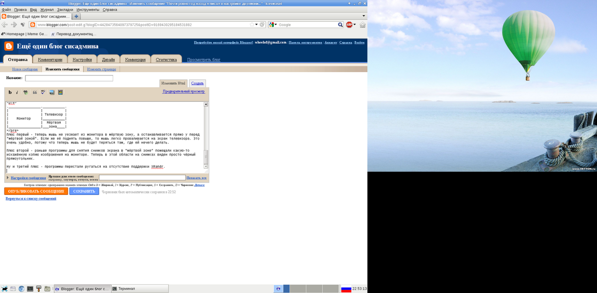

Почти ровно год назад я писал о настройке двухмониторной конфигурации X-сервера в заметке Xinerama: монитор и телевизор.
До недавних пор я был, в принципе, почти всем доволен. Меня лишь иногда беспокоило то, что при запуске из консоли некоторые программы ругались на отсутствие поддержки расширения XRandr. Это расширение конфликтует с конфигурацией Xinerama, и поэтому оно автоматически отключается. Многие программы, видимо, рассчитаны на работу именно с расширением XRandr, но не умеют работать с Xinerama. В чём заключалось это неумение - не понятно, всё работало нормально, за исключением этих последних китайских предупреждений.
В комментариях к моей предпоследней заметке "Настройка X-сервера" virens, автор блога Записки дебианщика, сказал, что ему будет интересно почитать о моём опыте настройки двухмониторной конфигурации с помощью XRandr. И сегодня я решил попробовать настроить XRandr.
К сожалению, настроить двухмониторную конфигурацию с помощью Xrandr мне не удалось - проприетарный драйвер nvidia, которым я пользуюсь, не поддерживает XRandr. (Тут я оставлю место для тухлых помидоров.) В своё оправдание могу сказать, что моему компьютеру уже почти 6 лет, а 6 лет назад покупка видеокарты ATI для компьютера с Linux неизбежно приводила к захватывающим приключениям на мягкое место. Хотя, говорят, что совсем недавно nvidia всё-таки сподобилась выпустить драйверы с поддержкой XRandr (Тестовая версия проприетарного драйвера NVIDIA 302.07 с поддержкой RandR 1.2/1.3), но эта новость скорее всего не работает для моего случая с видеокартой, которая поддерживается только legacy-драйвером nvidia. Но зато в проприетарном драйвере nvidia есть свой собственный велосипед для двухмониторых (и только) конфигураций под названием TwinView. Его-то я и попробовал настроить.
Это оказалось довольно простым делом, если вооружиться Переводом документации драйвера NVIDIA для Linux. Всё нужное у меня уже было готово после настройки Xinerama. Что я сделал:
Закоментировал опции
Screen 1 "Screen1" RightOf "Screen0"
и
Option "Xinerama" "On"
в секции ServerLayout,
Вписал в оставшуюся секцию Device следующие опции:
Option "TwinView" Option "TwinViewOrientation" "RigthOf" Option "SecondMonitorHorizSync" "15.625 - 15.625" Option "SecondMonitorVertSync" "50.0 - 50.0" Option "MetaModes" "1280x1024,800x600; 1024x768, 800x600; 800x600, 800x600; 640x480, 800x600"
Как это ни странно, но всё заработало. Появились даже несколько плюсов. Поскольку у двух экранов разное разрешение по вертикали, то под вторым экраном образовывалась некая область, которую я условно назвал "мёртвая зона":
.________________.___________. | | | | | Телевизор | | Монитор |___________| | | Мёртвая | |________________|___зона____|
Плюс первый - теперь мышь не уезжает из монитора в мёртвую зону, а останавливается прямо перед "мёртвой зоной", на краю экрана монитора. Если же мышь поднять повыше, то она легко проваливается на экран телевизора. Это удобно, потому что так мышь не теряется там, где ей нечего делать.
Плюс второй - раньше программы для снятия снимков экрана в "мёртвой зоне" помещали какую-то искажённую копию изображения на мониторе. Теперь в этой области на снимках виден просто чёрный прямоугольник (см. снимок ниже).
Ну и третий плюс - программы перестали ругаться на отсутствие поддержки XRandr.
Теперь снимки экрана выглядят вот так:
А мой третий файл конфигурации X-сервера для случая настройки двухмониторной конфигурации с использованием TwinView, выглядит вот так (закоментированные фрагменты вырезаны):
Section "ServerFlags"
Option "AutoAddDevices" "False"
Option "AllowEmptyInput" "False"
Option "DontZap" "False"
EndSection
Section "ServerLayout"
Identifier "X.org Configured"
Screen 0 "Screen0" 0 0
InputDevice "Mouse0" "CorePointer"
InputDevice "Keyboard0" "CoreKeyboard"
EndSection
Section "Files"
#RgbPath "/etc/X11/rgb"
ModulePath "/usr/lib/xorg/modules"
FontPath "/usr/share/fonts/X11/misc"
FontPath "/usr/share/fonts/X11/Type1"
FontPath "/var/lib/defoma/x-ttcidfont-conf.d/dirs/TrueType"
EndSection
Section "Module"
Load "dri"
Load "GLcore"
Load "glx"
Load "dbe"
Load "record"
Load "extmod"
Load "xtrap"
EndSection
Section "InputDevice"
Identifier "Keyboard0"
Driver "kbd"
Option "XkbRules" "xorg"
Option "XkbModel" "pc104"
Option "XkbLayout" "us,ru"
Option "XkbOptions" "grp:alt_shift_toggle"
Option "XkbVariant" ",winkeys"
Option "AutoRepeat" "250 30"
EndSection
Section "InputDevice"
Identifier "Mouse0"
Driver "mouse"
Option "Protocol" "auto"
Option "Device" "/dev/input/mice"
Option "ZAxisMapping" "4 5 6 7"
EndSection
Section "Monitor"
DisplaySize 338 270 # mm
Identifier "Monitor0"
VendorName "LG"
ModelName "Flatron L1730S"
### Comment all HorizSync and VertRefresh values to use DDC:
HorizSync 30.0 - 80.2
VertRefresh 56.0 - 75.0
Option "DPMS"
# 1280x1024 @ 75.00 Hz (GTF) hsync: 80.17 kHz; pclk: 138.54 MHz
Modeline "1280x1024_75.00" 138.54 1280 1368 1504 1728 1024 1025 1028 1069 -HSync +Vsync
# 1024x768 @ 75.00 Hz (GTF) hsync: 60.15 kHz; pclk: 81.80 MHz
Modeline "1024x768_75.00" 81.80 1024 1080 1192 1360 768 769 772 802 -HSync +Vsync
# 800x600 @ 75.00 Hz (GTF) hsync: 47.02 kHz; pclk: 48.91 MHz
Modeline "800x600_75.00" 48.91 800 840 920 1040 600 601 604 627 -HSync +Vsync
# 640x480 @ 75.00 Hz (GTF) hsync: 37.65 kHz; pclk: 30.72 MHz
Modeline "640x480_75.00" 30.72 640 664 728 816 480 481 484 502 -HSync +Vsync
EndSection
Section "Device"
Identifier "Card0"
Driver "nvidia"
VendorName "nVidia Corporation"
BoardName "NV43 [GeForce 6600]"
BusID "PCI:5:0:0"
Option "TwinView"
Option "TwinViewOrientation" "RigthOf"
Option "SecondMonitorHorizSync" "15.625 - 15.625"
Option "SecondMonitorVertSync" "50.0 - 50.0"
Option "MetaModes" "1280x1024,800x600; 1024x768, 800x600; 800x600, 800x600; 640x480, 800x600"
EndSection
Section "Screen"
Identifier "Screen0"
Device "Card0"
Monitor "Monitor0"
DefaultDepth 24
SubSection "Display"
Viewport 0 0
Depth 24
Modes "1280x1024_75.00" "1024x768_75.00" "800x600_75.00" "640x480_75.00"
EndSubSection
EndSection